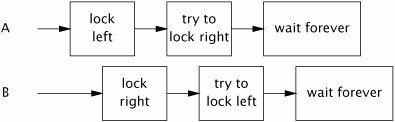

{% include JB/setup %}
{% raw %}
<div>


<a name="ch10lev1sec1" class="calibre18" id="ch10lev1sec1"></a>
<h3 id="title-IDAVOFCN" class="docSection1Title">10.1. Deadlock</h3>
<p class="docText1">Deadlock is illustrated by the classic, if somewhat unsanitary, "dining philosophers" problem. Five philosophers go out for Chinese food and are seated at a circular table. There are five chopsticks (not five pairs), one placed between each pair of diners. The philosophers alternate between thinking and eating. Each needs to acquire two chopsticks for long enough to eat, but can then put the chopsticks back and return to thinking. There are some chopstick-management algorithms that let everyone eat on a more or less timely basis (a hungry philosopher tries to grab both adjacent chopsticks, but if one is not available, puts down the one that is available and waits a minute or so before trying again), and some that can result in some or all of the philosophers dying of hunger (each philosopher immediately grabs the chopstick to his left and waits for the chopstick to his right to be available before putting down the left). The latter situation, where each has a resource needed by another and is waiting for a resource held by another, and will not release the one they hold until they acquire the one they don't, illustrates deadlock.</p>
<p class="docText1">When a thread holds a lock forever, other threads attempting to acquire that lock will block forever waiting. When thread <span class="docEmphasis">A</span> holds lock <span class="docEmphasis">L</span> and tries to acquire lock <span class="docEmphasis">M</span>, but at the same time thread <span class="docEmphasis">B</span> holds <span class="docEmphasis">M</span> and tries to acquire <span class="docEmphasis">L</span>, <span class="docEmphasis">both</span> threads will wait forever. This situation is the simplest case of deadlock (or <span class="docEmphasis">deadly embrace</span>), where multiple threads wait forever due to a cyclic locking dependency. (Think of the threads as the nodes of a directed graph whose edges represent the relation <a name="iddle1556" class="calibre18" id="iddle1556"></a><a name="iddle1557" class="calibre18" id="iddle1557"></a><a name="iddle1780" class="calibre18" id="iddle1780"></a><a name="iddle1781" class="calibre18" id="iddle1781"></a><a name="iddle1810" class="calibre18" id="iddle1810"></a><a name="iddle1811" class="calibre18" id="iddle1811"></a><a name="iddle2515" class="calibre18" id="iddle2515"></a><a name="iddle2552" class="calibre18" id="iddle2552"></a><a name="iddle2915" class="calibre18" id="iddle2915"></a><a name="iddle3124" class="calibre18" id="iddle3124"></a><a name="iddle3125" class="calibre18" id="iddle3125"></a><a name="iddle3405" class="calibre18" id="iddle3405"></a><a name="iddle3406" class="calibre18" id="iddle3406"></a>"Thread <span class="docEmphasis">A</span> is waiting for a resource held by thread <span class="docEmphasis">B</span>". If this graph is cyclical, there is a deadlock.)</p>
<p class="docText1">Database systems are designed to detect and recover from deadlock. A transaction may acquire many locks, and locks are held until the transaction commits. So it is quite possible, and in fact not uncommon, for two transactions to deadlock. Without intervention, they would wait forever (holding locks that are probably required by other transactions as well). But the database server is not going to let this happen. When it detects that a set of transactions is deadlocked (which it does by searching the <span class="docEmphasis">is-waiting-for</span> graph for cycles), it picks a victim and aborts that transaction. This releases the locks held by the victim, allowing the other transactions to proceed. The application can then retry the aborted transaction, which may be able to complete now that any competing transactions have completed.</p>
<p class="docText1">The JVM is not nearly as helpful in resolving deadlocks as database servers are. When a set of Java threads deadlock, that's the end of the gamethose threads are permanently out of commission. Depending on what those threads do, the application may stall completely, or a particular subsystem may stall, or performance may suffer. The only way to restore the application to health is to abort and restart itand hope the same thing doesn't happen again.</p>
<p class="docText1">Like many other concurrency hazards, deadlocks rarely manifest themselves immediately. The fact that a class has a potential deadlock doesn't mean that it ever <span class="docEmphasis">will</span> deadlock, just that it can. When deadlocks do manifest themselves, it is often at the worst possible timeunder heavy production load.</p>
<a name="ch10lev2sec1" class="calibre18" id="ch10lev2sec1"></a>
<h4 id="title-IDAUUFCN" class="docSection2Title">10.1.1. Lock-ordering Deadlocks</h4>
<p class="docText1"><tt class="calibre25">LeftRightDeadlock</tt> in <a class="calibre2" href="#ch10list01">Listing 10.1</a> is at risk for deadlock. The <tt class="calibre25">leftRight</tt> and <tt class="calibre25">rightLeft</tt> methods each acquire the <tt class="calibre25">left</tt> and <tt class="calibre25">right</tt> locks. If one thread calls <tt class="calibre25">leftRight</tt> and another calls <tt class="calibre25">rightLeft</tt>, and their actions are interleaved as shown in <a class="calibre2" href="#ch10fig01">Figure 10.1</a>, they will deadlock.</p>
<a name="ch10fig01" class="calibre18" id="ch10fig01"></a><p class="calibre21"><div class="calibre12">
<h5 class="docExampleTitle">Figure 10.1. Unlucky Timing in <tt class="calibre33">LeftRightDeadlock</tt>.</h5>
</div></p><p class="docText1">
</p>
<p class="calibre1"> </p>
<p class="docText1">The deadlock in <tt class="calibre25">LeftRightDeadlock</tt> came about because the two threads attempted to acquire the same locks in a <span class="docEmphasis">different order</span>. If they asked for the locks in the same order, there would be no cyclic locking dependency and therefore no deadlock. If you can guarantee that every thread that needs locks <span class="docEmphasis">L</span> and <span class="docEmphasis">M</span> at the same time always acquires <span class="docEmphasis">L</span> and <span class="docEmphasis">M</span> in the same order, there will be no deadlock.</p>
<a name="ch10sb01" class="calibre18" id="ch10sb01"></a><p class="calibre21"><table cellspacing="0" width="90%" border="1" cellpadding="5" class="calibre5"><tr class="calibre6"><td class="calibre28">
<p class="docText1">A program will be free of lock-ordering deadlocks if all threads acquire the locks they need in a fixed global order.</p>
</td></tr></table></p><p class="calibre1"> </p>
<p class="docText1">Verifying consistent lock ordering requires a global analysis of your program's locking behavior. It is not sufficient to inspect code paths that acquire multiple locks individually; both <tt class="calibre25">leftRight</tt> and <tt class="calibre25">rightLeft</tt> are "reasonable" ways to acquire the two locks, they are just not compatible. When it comes to locking, the left hand needs to know what the right hand is doing.</p>
<p class="docText1"></p><a name="ch10list01" class="calibre18" id="ch10list01"></a><h5 id="title-IDAYXFCN" class="docExampleTitle">Listing 10.1. Simple Lock-ordering Deadlock. <span class="docEmphasis">Don't Do this.</span></h5><p class="calibre21"><table cellspacing="0" width="90%" border="1" cellpadding="5" class="calibre5"><tr class="calibre6"><td class="calibre28">

<pre class="calibre30"><span class="docEmphasis">// Warning: deadlock-prone!</span>
public class LeftRightDeadlock {
    private final Object left = new Object();
    private final Object right = new Object();

    public void leftRight() {
        synchronized (left) {
            synchronized (right) {
                doSomething();
            }
        }
    }

    public void rightLeft() {
        synchronized (right) {
            synchronized (left) {
                doSomethingElse();
            }
        }
    }
}
</pre><br class="calibre11"/>
</td></tr></table></p>
<a name="ch10lev2sec2" class="calibre18" id="ch10lev2sec2"></a>
<h4 id="title-IDAXYFCN" class="docSection2Title">10.1.2. Dynamic Lock Order Deadlocks</h4>
<p class="docText1"><a name="iddle1806" class="calibre18" id="iddle1806"></a><a name="iddle1978" class="calibre18" id="iddle1978"></a><a name="iddle2127" class="calibre18" id="iddle2127"></a><a name="iddle3126" class="calibre18" id="iddle3126"></a><a name="iddle3407" class="calibre18" id="iddle3407"></a><a name="iddle4905" class="calibre18" id="iddle4905"></a>Sometimes it is not obvious that you have sufficient control over lock ordering to prevent deadlocks. Consider the harmless-looking code in <a class="calibre2" href="#ch10list02">Listing 10.2</a> that transfers funds from one account to another. It acquires the locks on both <tt class="calibre25">Account</tt> objects before executing the transfer, ensuring that the balances are updated atomically and without violating invariants such as "an account cannot have a negative balance".</p>
<p class="docText1">How can <tt class="calibre25">TRansferMoney</tt> deadlock? It may appear as if all the threads acquire their locks in the same order, but in fact the lock order depends on the order of arguments passed to <tt class="calibre25">transferMoney</tt>, and these in turn might depend on external inputs. Deadlock can occur if two threads call <tt class="calibre25">transferMoney</tt> at the same time, <a name="iddle2628" class="calibre18" id="iddle2628"></a><a name="iddle2733" class="calibre18" id="iddle2733"></a><a name="iddle2734" class="calibre18" id="iddle2734"></a><a name="iddle3054" class="calibre18" id="iddle3054"></a><a name="iddle4459" class="calibre18" id="iddle4459"></a>one transferring from <span class="docEmphasis">X</span> to <span class="docEmphasis">Y</span>, and the other doing the opposite:</p>
<a name="ch10list02" class="calibre18" id="ch10list02"></a><h5 id="title-IDAR3FCN" class="docExampleTitle">Listing 10.2. Dynamic Lock-ordering Deadlock. <span class="docEmphasis">Don't Do this.</span></h5><p class="calibre21"><table cellspacing="0" width="90%" border="1" cellpadding="5" class="calibre5"><tr class="calibre6"><td class="calibre28">

<pre class="calibre30"><span class="docEmphasis">// Warning: deadlock-prone!</span>
public void transferMoney(Account fromAccount,
                          Account toAccount,
                          DollarAmount amount)
        throws InsufficientFundsException {
    synchronized (fromAccount) {
        synchronized (toAccount) {
            if (fromAccount.getBalance().compareTo(amount) &lt; 0)
                throw new InsufficientFundsException();
            else {
                fromAccount.debit(amount);
                toAccount.credit(amount);
            }
        }
    }
}
</pre><br class="calibre11"/>
</td></tr></table></p>
<div class="docText2"><pre class="calibre36">A: transferMoney(myAccount, yourAccount, 10);
B: transferMoney(yourAccount, myAccount, 20);
</pre></div><p class="calibre1"> </p>
<p class="docText1">With unlucky timing, <span class="docEmphasis">A</span> will acquire the lock on <tt class="calibre25">myAccount</tt> and wait for the lock on <tt class="calibre25">yourAccount</tt>, while <span class="docEmphasis">B</span> is holding the lock on <tt class="calibre25">yourAccount</tt> and waiting for the lock on <tt class="calibre25">myAccount</tt>.</p>
<p class="docText1">Deadlocks like this one can be spotted the same way as in <a class="calibre2" href="#ch10list01">Listing 10.1</a>look for nested lock acquisitions. Since the order of arguments is out of our control, to fix the problem we must <span class="docEmphasis">induce</span> an ordering on the locks and acquire them according to the induced ordering consistently throughout the application.</p>
<p class="docText1">One way to induce an ordering on objects is to use <tt class="calibre25">System.identityHashCode</tt>, which returns the value that would be returned by <tt class="calibre25">Object.hashCode</tt>. <a class="calibre2" href="#ch10list03">Listing 10.3</a> shows a version of <tt class="calibre25">transferMoney</tt> that uses <tt class="calibre25">System.identityHashCode</tt> to induce a lock ordering. It involves a few extra lines of code, but eliminates the possibility of deadlock.</p>
<p class="docText1">In the rare case that two objects have the same hash code, we must use an arbitrary means of ordering the lock acquisitions, and this reintroduces the possibility of deadlock. To prevent inconsistent lock ordering in this case, a third "tie breaking" lock is used. By acquiring the tie-breaking lock before acquiring either <tt class="calibre25">Account</tt> lock, we ensure that only one thread at a time performs the risky task of acquiring two locks in an arbitrary order, eliminating the possibility of deadlock (so long as this mechanism is used consistently). If hash collisions were common, this technique might become a concurrency bottleneck (just as having a single, program-wide lock would), but because hash collisions with <tt class="calibre25">System.identityHashCode</tt> are vanishingly infrequent, this technique provides that last bit of safety at little cost.</p>
<a name="ch10list03" class="calibre18" id="ch10list03"></a><h5 id="title-IDAOYUOJ" class="docExampleTitle">Listing 10.3. Inducing a Lock Ordering to Avoid Deadlock.</h5><p class="calibre21"><table cellspacing="0" width="90%" border="1" cellpadding="5" class="calibre5"><tr class="calibre6"><td class="calibre28">
<pre class="calibre30">private static final Object tieLock = new Object();

public void transferMoney(final Account fromAcct,
                          final Account toAcct,
                          final DollarAmount amount)
        throws InsufficientFundsException {
    class Helper {
        public void transfer() throws InsufficientFundsException {
            if (fromAcct.getBalance().compareTo(amount) &lt; 0)
                throw new InsufficientFundsException();
            else {
                fromAcct.debit(amount);
                toAcct.credit(amount);
            }
        }
    }
    int fromHash = System.identityHashCode(fromAcct);
    int toHash = System.identityHashCode(toAcct);

    if (fromHash &lt; toHash) {
        synchronized (fromAcct) {
            synchronized (toAcct) {
                new Helper().transfer();
            }
        }
    } else if (fromHash &gt; toHash) {
        synchronized (toAcct) {
            synchronized (fromAcct) {
                new Helper().transfer();
            }
        }
    } else {
        synchronized (tieLock) {
            synchronized (fromAcct) {
                synchronized (toAcct) {
                   new Helper().transfer();
                }
            }
        }
    }
}
</pre><br class="calibre11"/>
</td></tr></table></p>
<p class="docText1"><a name="iddle2109" class="calibre18" id="iddle2109"></a><a name="iddle4694" class="calibre18" id="iddle4694"></a>If <tt class="calibre25">Account</tt> has a unique, immutable, comparable key such as an account number, inducing a lock ordering is even easier: order objects by their key, thus eliminating the need for the tie-breaking lock.</p>
<p class="docText1">You may think we're overstating the risk of deadlock because locks are usually held only briefly, but deadlocks are a serious problem in real systems. A production application may perform billions of lock acquire-release cycles per day. Only one of those needs to be timed just wrong to bring the application to deadlock, and even a thorough load-testing regimen may not disclose all latent deadlocks.<sup class="docFootnote"><a class="calibre2" href="#ch10fn01">[1]</a></sup> <tt class="calibre25">DemonstrateDeadlock</tt> in <a class="calibre2" href="#ch10list04">Listing 10.4</a><sup class="docFootnote"><a class="calibre2" href="#ch10fn02">[2]</a></sup> deadlocks fairly quickly on most systems.</p><blockquote class="calibre19"><p class="docFootnote1"><sup class="calibre27"><a name="ch10fn01" class="calibre18" id="ch10fn01">[1]</a></sup> Ironically, holding locks for short periods of time, as you are supposed to do to reduce lock contention, increases the likelihood that testing will not disclose latent deadlock risks.</p></blockquote><blockquote class="calibre19"><p class="docFootnote1"><sup class="calibre27"><a name="ch10fn02" class="calibre18" id="ch10fn02">[2]</a></sup> For simplicity, <tt class="calibre35">DemonstrateDeadlock</tt> ignores the issue of negative account balances.</p></blockquote>
<a name="ch10list04" class="calibre18" id="ch10list04"></a><h5 id="title-IDAR0UOJ" class="docExampleTitle">Listing 10.4. Driver Loop that Induces Deadlock Under Typical Conditions.</h5><p class="calibre21"><table cellspacing="0" width="90%" border="1" cellpadding="5" class="calibre5"><tr class="calibre6"><td class="calibre28">
<pre class="calibre30">public class DemonstrateDeadlock {
    private static final int NUM_THREADS = 20;
    private static final int NUM_ACCOUNTS = 5;
    private static final int NUM_ITERATIONS = 1000000;

    public static void main(String[] args) {
        final Random rnd = new Random();
        final Account[] accounts = new Account[NUM_ACCOUNTS];

        for (int i = 0; i &lt; accounts.length; i++)
            accounts[i] = new Account();

        class TransferThread extends Thread {
            public void run() {
                for (int i=0; i&lt;NUM_ITERATIONS; i++) {
                    int fromAcct = rnd.nextInt(NUM_ACCOUNTS);
                    int toAcct = rnd.nextInt(NUM_ACCOUNTS);
                    DollarAmount amount =
                        new DollarAmount(rnd.nextInt(1000));
                    transferMoney(accounts[fromAcct],
                                  accounts[toAcct], amount);
                }
            }
        }
        for (int i = 0; i &lt; NUM_THREADS; i++)
            new TransferThread().start();
    }
}
</pre><br class="calibre11"/>
</td></tr></table></p>
<a name="ch10lev2sec3" class="calibre18" id="ch10lev2sec3"></a>
<h4 id="title-IDAE1UOJ" class="docSection2Title">10.1.3. Deadlocks Between Cooperating Objects</h4>
<p class="docText1"><a name="iddle1069" class="calibre18" id="iddle1069"></a><a name="iddle1447" class="calibre18" id="iddle1447"></a><a name="iddle1592" class="calibre18" id="iddle1592"></a><a name="iddle1648" class="calibre18" id="iddle1648"></a><a name="iddle1803" class="calibre18" id="iddle1803"></a><a name="iddle2513" class="calibre18" id="iddle2513"></a><a name="iddle2514" class="calibre18" id="iddle2514"></a><a name="iddle3081" class="calibre18" id="iddle3081"></a><a name="iddle3122" class="calibre18" id="iddle3122"></a><a name="iddle3123" class="calibre18" id="iddle3123"></a><a name="iddle3369" class="calibre18" id="iddle3369"></a><a name="iddle3370" class="calibre18" id="iddle3370"></a>Multiple lock acquisition is not always as obvious as in <tt class="calibre25">LeftRightDeadlock</tt> or <tt class="calibre25">TRansferMoney</tt>; the two locks need not be acquired by the same method. Consider the cooperating classes in <a class="calibre2" href="#ch10list05">Listing 10.5</a>, which might be used in a taxicab dispatching application. <tt class="calibre25">Taxi</tt> represents an individual taxi with a location and a destination; <tt class="calibre25">Dispatcher</tt> represents a fleet of taxis.</p>
<p class="docText1">While no method <span class="docEmphasis">explicitly</span> acquires two locks, callers of <tt class="calibre25">setLocation</tt> and <tt class="calibre25">getImage</tt> can acquire two locks just the same. If a thread calls <tt class="calibre25">setLocation</tt> in response to an update from a GPS receiver, it first updates the taxi's location and then checks to see if it has reached its destination. If it has, it informs the dispatcher that it needs a new destination. Since both <tt class="calibre25">setLocation</tt> and <tt class="calibre25">notifyAvailable</tt> are <tt class="calibre25">synchronized</tt>, the thread calling <tt class="calibre25">setLocation</tt> acquires the <tt class="calibre25">Taxi</tt> lock and then the <tt class="calibre25">Dispatcher</tt> lock. Similarly, a thread calling <tt class="calibre25">getImage</tt> acquires the <tt class="calibre25">Dispatcher</tt> lock and then each <tt class="calibre25">Taxi</tt> lock (one at at time). Just as in <tt class="calibre25">LeftRightDeadlock</tt>, two locks are acquired by two threads in different orders, risking deadlock.</p>
<p class="docText1">It was easy to spot the deadlock possibility in <tt class="calibre25">LeftRightDeadlock</tt> or <tt class="calibre25">transferMoney</tt> by looking for methods that acquire two locks. Spotting the deadlock possibility in <tt class="calibre25">Taxi</tt> and <tt class="calibre25">Dispatcher</tt> is a little harder: the warning sign is that an <span class="docEmphasis">alien</span> method (defined on page 40) is being called while holding a lock.</p>
<a name="ch10sb02" class="calibre18" id="ch10sb02"></a><p class="calibre21"><table cellspacing="0" width="90%" border="1" cellpadding="5" class="calibre5"><tr class="calibre6"><td class="calibre28">
<p class="docText1">Invoking an alien method with a lock held is asking for liveness trouble. The alien method might acquire other locks (risking deadlock) or block for an unexpectedly long time, stalling other threads that need the lock you hold.</p>
</td></tr></table></p><p class="calibre1"> </p>
<a name="ch10lev2sec4" class="calibre18" id="ch10lev2sec4"></a>
<h4 id="title-IDA4ZAIN" class="docSection2Title">10.1.4. Open Calls</h4>
<p class="docText1">Of course, <tt class="calibre25">Taxi</tt> and <tt class="calibre25">Dispatcher</tt> didn't <span class="docEmphasis">know</span> that they were each half of a deadlock waiting to happen. And they shouldn't have to; a method call is an abstraction barrier intended to shield you from the details of what happens on the other side. But because you don't know what is happening on the other side of the call, <span class="docEmphasis">calling an alien method with a lock held is difficult to analyze and therefore risky.</span></p>
<p class="docText1">Calling a method with no locks held is called an <span class="docEmphasis">open call</span> [CPJ 2.4.1.3], and classes that rely on open calls are more well-behaved and composable than classes that make calls with locks held. Using open calls to avoid deadlock is analogous to using encapsulation to provide thread safety: while one can certainly construct a thread-safe program without any encapsulation, the thread safety analysis of a program that makes effective use of encapsulation is far easier than that of one that does not. Similarly, the liveness analysis of a program that relies exclusively on open calls is far easier than that of one that does not. Restricting yourself to <a name="iddle1646" class="calibre18" id="iddle1646"></a><a name="iddle1647" class="calibre18" id="iddle1647"></a><a name="iddle2110" class="calibre18" id="iddle2110"></a><a name="iddle2195" class="calibre18" id="iddle2195"></a><a name="iddle1152" class="calibre18" id="iddle1152"></a><a name="iddle1816" class="calibre18" id="iddle1816"></a><a name="iddle2516" class="calibre18" id="iddle2516"></a><a name="iddle3713" class="calibre18" id="iddle3713"></a><a name="iddle3714" class="calibre18" id="iddle3714"></a><a name="iddle3909" class="calibre18" id="iddle3909"></a><a name="iddle4073" class="calibre18" id="iddle4073"></a>open calls makes it far easier to identify the code paths that acquire multiple locks and therefore to ensure that locks are acquired in a consistent order.<sup class="docFootnote"><a class="calibre2" href="#ch10fn03">[3]</a></sup></p><blockquote class="calibre19"><p class="docFootnote1"><sup class="calibre27"><a name="ch10fn03" class="calibre18" id="ch10fn03">[3]</a></sup> The need to rely on open calls and careful lock ordering reflects the fundamental messiness of composing synchronized objects rather than synchronizing composed objects.</p></blockquote>
<a name="ch10list05" class="calibre18" id="ch10list05"></a><h5 id="title-IDAW4AIN" class="docExampleTitle">Listing 10.5. Lock-ordering Deadlock Between Cooperating Objects. <span class="docEmphasis">Don't Do this.</span></h5><p class="calibre21"><table cellspacing="0" width="90%" border="1" cellpadding="5" class="calibre5"><tr class="calibre6"><td class="calibre28">

<pre class="calibre30"><span class="docEmphasis">// Warning: deadlock-prone!</span>
class Taxi {
    @GuardedBy("this") private Point location, destination;
    private final Dispatcher dispatcher;

    public Taxi(Dispatcher dispatcher) {
        this.dispatcher = dispatcher;
    }

    public synchronized Point getLocation() {
        return location;
    }

    public synchronized void setLocation(Point location) {
        this.location = location;
        if (location.equals(destination))
            dispatcher.notifyAvailable(this);
    }
}

class Dispatcher {
    @GuardedBy("this") private final Set&lt;Taxi&gt; taxis;
    @GuardedBy("this") private final Set&lt;Taxi&gt; availableTaxis;

    public Dispatcher() {
        taxis = new HashSet&lt;Taxi&gt;();
        availableTaxis = new HashSet&lt;Taxi&gt;();
    }

    public synchronized void notifyAvailable(Taxi taxi) {
        availableTaxis.add(taxi);
    }

    public synchronized Image getImage() {
        Image image = new Image();
        for (Taxi t : taxis)
            image.drawMarker(t.getLocation());
        return image;
    }
}
</pre><br class="calibre11"/>
</td></tr></table></p>
<p class="docText1"><tt class="calibre25">Taxi</tt> and <tt class="calibre25">Dispatcher</tt> in <a class="calibre2" href="#ch10list05">Listing 10.5</a> can be easily refactored to use open calls and thus eliminate the deadlock risk. This involves shrinking the <tt class="calibre25">synchronized</tt> blocks to guard only operations that involve shared state, as in <a class="calibre2" href="#ch10list06">Listing 10.6</a>. Very often, the cause of problems like those in <a class="calibre2" href="#ch10list05">Listing 10.5</a> is the use of <tt class="calibre25">synchronized</tt> methods instead of smaller <tt class="calibre25">synchronized</tt> blocks for reasons of compact syntax or simplicity rather than because the entire method must be guarded by a lock. (As a bonus, shrinking the <tt class="calibre25">synchronized</tt> block may also improve scalability as well; see <a class="calibre2" href="ch11lev1sec4.html#ch11lev2sec8">Section 11.4.1</a> for advice on sizing <tt class="calibre25">synchronized</tt> blocks.)</p>
<a name="ch10sb03" class="calibre18" id="ch10sb03"></a><p class="calibre21"><table cellspacing="0" width="90%" border="1" cellpadding="5" class="calibre5"><tr class="calibre6"><td class="calibre28">
<p class="docText1">Strive to use open calls throughout your program. Programs that rely on open calls are far easier to analyze for deadlock-freedom than those that allow calls to alien methods with locks held.</p>
</td></tr></table></p><p class="calibre1"> </p>
<p class="docText1">Restructuring a <tt class="calibre25">synchronized</tt> block to allow open calls can sometimes have undesirable consequences, since it takes an operation that was atomic and makes it not atomic. In many cases, the loss of atomicity is perfectly acceptable; there's no reason that updating a taxi's location and notifying the dispatcher that it is ready for a new destination need be an atomic operation. In other cases, the loss of atomicity is noticeable but the semantic changes are still acceptable. In the deadlock-prone version, <tt class="calibre25">getImage</tt> produces a complete snapshot of the fleet locations at that instant; in the refactored version, it fetches the location of each taxi at slightly different times.</p>
<p class="docText1">In some cases, however, the loss of atomicity is a problem, and here you will have to use another technique to achieve atomicity. One such technique is to structure a concurrent object so that only one thread can execute the code path following the open call. For example, when shutting down a service, you may want to wait for in-progress operations to complete and then release resources used by the service. Holding the service lock while waiting for operations to complete is inherently deadlock-prone, but releasing the service lock before the service is shut down may let other threads start new operations. The solution is to hold the lock long enough to update the service state to "shutting down" so that other threads wanting to start new operationsincluding shutting down the servicesee that the service is unavailable, and do not try. You can then wait for shutdown to complete, knowing that only the shutdown thread has access to the service state after the open call completes. Thus, rather than using locking to keep the other threads out of a critical section of code, this technique relies on constructing protocols so that other threads don't try to get in.</p>
<a name="ch10lev2sec5" class="calibre18" id="ch10lev2sec5"></a>
<h4 id="title-IDAQBBIN" class="docSection2Title">10.1.5. Resource Deadlocks</h4>
<p class="docText1">Just as threads can deadlock when they are each waiting for a lock that the other holds and will not release, they can also deadlock when waiting for resources.</p>
<a name="ch10list06" class="calibre18" id="ch10list06"></a><h5 id="title-IDA5BBIN" class="docExampleTitle">Listing 10.6. Using Open Calls to Avoiding Deadlock Between Cooperating Objects.</h5><p class="calibre21"><table cellspacing="0" width="90%" border="1" cellpadding="5" class="calibre5"><tr class="calibre6"><td class="calibre28">
<pre class="calibre30">@ThreadSafe
class Taxi {
    @GuardedBy("this") private Point location, destination;
    private final Dispatcher dispatcher;
    ...
    public synchronized Point getLocation() {
        return location;
    }

    public synchronized void setLocation(Point location) {
        boolean reachedDestination;
        <span class="docEmphStrong">synchronized</span>  (this) {
            this.location = location;
            reachedDestination = location.equals(destination);
        }
        if (reachedDestination)
            dispatcher.notifyAvailable(this);
    }
}

@ThreadSafe
class Dispatcher {
    @GuardedBy("this") private final Set&lt;Taxi&gt; taxis;
    @GuardedBy("this") private final Set&lt;Taxi&gt; availableTaxis;
    ...
    public synchronized void notifyAvailable(Taxi taxi) {
        availableTaxis.add(taxi);
    }

    public Image getImage() {
        Set&lt;Taxi&gt; copy;
        <span class="docEmphStrong">synchronized</span>  (this) {
            copy = new HashSet&lt;Taxi&gt;(taxis);
        }
        Image image = new Image();
        for (Taxi t : copy)
            image.drawMarker(t.getLocation());
        return image;
    }
}
</pre><br class="calibre11"/>
</td></tr></table></p>
<p class="docText1"><a name="iddle2111" class="calibre18" id="iddle2111"></a><a name="iddle2196" class="calibre18" id="iddle2196"></a><a name="iddle1802" class="calibre18" id="iddle1802"></a><a name="iddle1804" class="calibre18" id="iddle1804"></a><a name="iddle1805" class="calibre18" id="iddle1805"></a><a name="iddle1814" class="calibre18" id="iddle1814"></a><a name="iddle1819" class="calibre18" id="iddle1819"></a><a name="iddle2317" class="calibre18" id="iddle2317"></a><a name="iddle2318" class="calibre18" id="iddle2318"></a><a name="iddle3043" class="calibre18" id="iddle3043"></a><a name="iddle3158" class="calibre18" id="iddle3158"></a><a name="iddle3629" class="calibre18" id="iddle3629"></a><a name="iddle4376" class="calibre18" id="iddle4376"></a><a name="iddle4460" class="calibre18" id="iddle4460"></a><a name="iddle4800" class="calibre18" id="iddle4800"></a><a name="iddle4837" class="calibre18" id="iddle4837"></a><a name="iddle4927" class="calibre18" id="iddle4927"></a>Say you have two pooled resources, such as connection pools for two different databases. Resource pools are usually implemented with semaphores (see <a class="calibre2" href="ch05lev1sec5.html#ch05lev2sec12">Section 5.5.3</a>) to facilitate blocking when the pool is empty. If a task requires connections to both databases and the two resources are not always requested in the same order, thread <span class="docEmphasis">A</span> could be holding a connection to database <span class="docEmphasis">D</span><sub class="calibre40">1</sub> while waiting for a connection to database <span class="docEmphasis">D</span><sub class="calibre40">2</sub>, and thread <span class="docEmphasis">B</span> could be holding a connection to <span class="docEmphasis">D</span><sub class="calibre40">2</sub> while waiting for a connection to <span class="docEmphasis">D</span><sub class="calibre40">1</sub>. (The larger the pools are, the less likely this is to occur; if each pool has <span class="docEmphasis">N</span> connections, deadlock requires <span class="docEmphasis">N</span> sets of cyclically waiting threads and a lot of unlucky timing.)</p>
<p class="docText1">Another form of resource-based deadlock is <span class="docEmphasis">thread-starvation deadlock</span>. We saw an example of this hazard in <a class="calibre2" href="ch08lev1sec1.html#ch08lev2sec1">Section 8.1.1</a>, where a task that submits a task and waits for its result executes in a single-threaded <tt class="calibre25">Executor</tt>. In that case, the first task will wait forever, permanently stalling that task and all others waiting to execute in that <tt class="calibre25">Executor</tt>. Tasks that wait for the results of other tasks are the primary source of thread-starvation deadlock; bounded pools and interdependent tasks do not mix well.</p>

<p class="calibre1"> </p>

</div>

{% endraw %}

